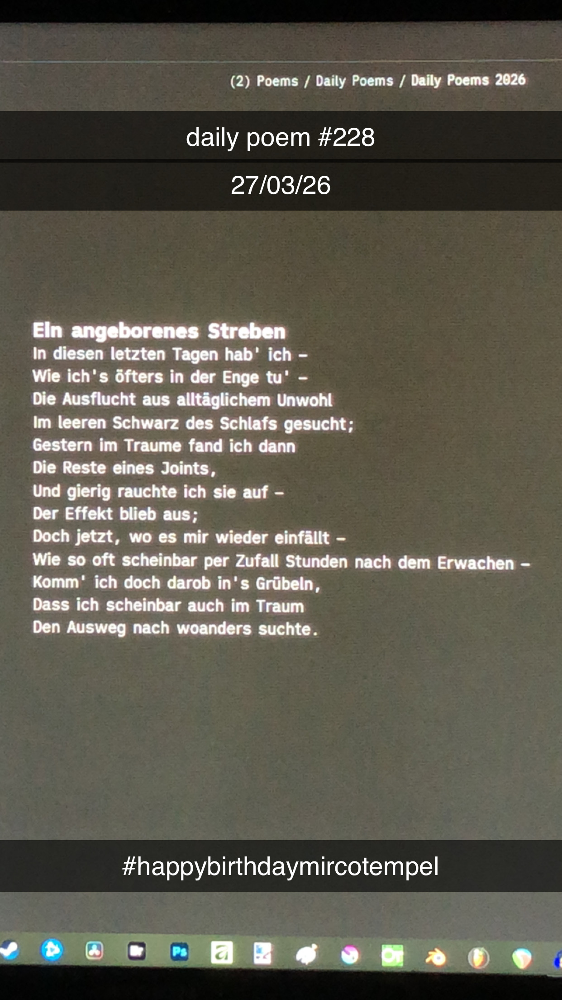

Ein angeborenes Streben
[228]In diesen letzten Tagen hab' ich –
Wie ich's öfters in der Enge tu' –
Die Ausflucht aus alltäglichem Unwohl
Im leeren Schwarz des Schlafs gesucht;
Gestern im Traume fand ich dann
Die Reste eines Joints,
Und gierig rauchte ich sie auf –
Der Effekt blieb aus;
Doch jetzt, wo es mir wieder einfällt –
Wie so oft scheinbar per Zufall Stunden nach dem Erwachen –
Komm' ich doch darob in's Grübeln,
Dass ich scheinbar auch im Traum
Den Ausweg nach woanders suchte.
